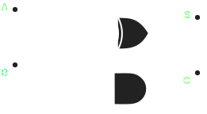

Description
A Half adder is a circuit designed to add two binary numbers, usually 1 bit long, If we are adding two one bit numbers then the maximum value to output is 2 which requires 2 output bits.
Thinking logically we can tell that if either inputs are high then out LSB should be high but not if both, this perfectly describes the xor function and completely solves the LSB. Now we need to think of the carry, for this our carry will only be on when both inputs are high which is the and function.
Using these simple logical derivations we get the circuit diagram shown below:

This is the default schematic for a half adder which is seen everywhere.
The issue with this circit is we cannot directly input one half adder into another to increse the bitsize as we have this carry out but nowhere to input it, this is fixed by using a full adder which is explained later.
Plan
As we have a circuit diagram for our program we can define the functions easily without the need for synchronous logic as our circuit doesn't depend on any clock signal.
Hardware
For this all we need are the FPGA dev board and 2 inputs and 2 outputs if your board doesn't already have them onboard.
Code
TEST VHDL